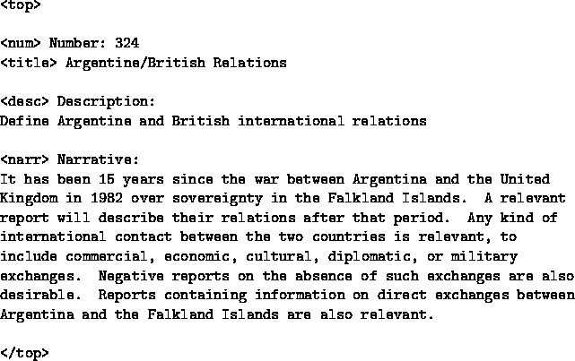
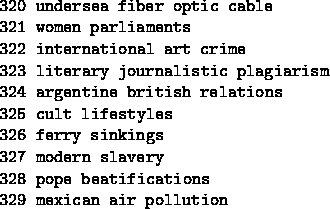
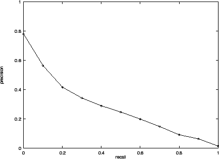
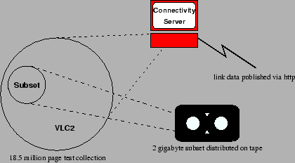

Keywords: Evaluation; Search engines; Test collection; TREC; Methodology
Web search technology appears to have dominated recent Web research and development activity. The editors of the WWW7 Proceedings [2] noted that
``About 20% of the 218 papers submitted as full papers were tagged by their authors as being in the area of Information Retrieval, and 17% in the area of Search and Indexing Techniques ... This is nearly double that of the next largest areas/topics for which papers were submitted".
Web research covers a broad spectrum of novel and promising ideas, including algorithms for ranking the relevance of Web pages such as [5], [15] and [16].
However, a very important question, from both a computer science and end-user perspective, remains basically unanswered regarding these and many other Web search algorithms - are they effective?
Aspects of effectiveness include whether the Web pages returned to the user are relevant (precision); whether they are presented in the order of relevance; whether a significant or desired number of available relevant pages have been identified to the user (recall); whether a required fact has been found and presented; whether a significant or desired number of aspects of the user's search need have been covered by the set of pages returned; whether returned pages are authoritative and so on.
As the Information Retrieval (IR) research community well knows, resolving the question of effectiveness requires an evaluation methodology which is both scientifically rigorous and satisfying from an end-user perspective. The foundations of such an evaluation methodology can be found in IR; namely, the Text Retrieval Conference (TREC) evaluation program undertaken by the US National Institute of Standards and Technology (NIST). [18] The TREC methodology is the result of decades of evaluation debate within the IR community. Key papers in this debate have recently been reprinted. [19, Chapter 4]
We have conducted some preliminary research into the effectiveness of four popular commercial Web search engines (plus one research system), using TREC-like methodology, and compared them to six TREC systems operating over 100 gigabytes (18.5 million pages) of Web data. Results (subject to a number of methodological limitations outlined below) are reported in Table 2 below. They do not support the claim [5, p. 111] that ``Things which work well on TREC often do not produce good results on the Web''.
In fact, this work suggests that these engines may be far from state-of-the-art when it comes to search effectiveness. This result has significant consequences for ongoing research. It is not uncommon for a bright new idea to appear to make a difference, but nonetheless be tangential, irrelevant or even detrimental to effectiveness and/or efficiency.
Using a rigorous evaluation methodology is not only good science, but has arguably contributed to the doubling in effectiveness of state-of-the-art search systems observed during the first few years of TREC. [6, p. 117, Table 16]
To date it has been difficult to perform meaningful effectiveness evaluation in the context of the Web. Comparisons of Web search engines have been confounded by the differences in the sets of pages spidered. Consequently, results are not reproducible because the data keeps changing. The same difficulties beset the evaluation of new retrieval methods such as hub-and-authority ranking, and distributed rather than centralised search.
Participants in the annual TREC conference must process a long set of queries over a standard 2 gigabyte test collection of newspaper and government documents and submit ranked lists of documents to NIST for assessment by human judges. Submissions are evaluated for effectiveness using measures described in Section 4.3.
|  |
The TREC approach to objective evaluation of effectiveness is to define a large set (at least 50) of statements of user need (called topics within TREC) and to use human judges to assess whether submitted pages are or are not relevant to the user's need. An example topic appears in Figure 1. Note that the title of the topic may be used as a query to the retrieval system or longer queries may be derived from more or all of the topic. Regardless of what query is used, pages are judged against the full topic. Evaluation of search systems using the TREC framework offers the following advantages:
To address the criticism that TREC data has not been representative of the Web, a new 100 gigabyte test collection of Web data was defined in 1997 and used in a special interest track of TREC-7. It is proposed that in TREC-8 this collection will be used to support more specifically Web-oriented evaluations. It is further proposed that new question answering tasks (such as ``What is the population of China?'' and ``Who is the Prime Minister of Canada?'') will be introduced alongside the traditional TREC research topics. It is also likely that real natural language queries obtained from search engine logs will be used.
At present, TREC judgments are binary (relevant/irrelevant, correct/incorrect, etc.) and completely independent of other judgments. However, there is active interest in broadening the definitions to address the issues of repetition, aspect-coverage, degrees of relevance, relevance of hyperlinked pages and so on.
The initiative proposed in this paper is an attempt to bring the Web and IR communities closer together by developing a TREC-style evaluation framework in which questions important to the Web community may be reproducibly answered.
This year's TREC will include a Web special interest track. It is proposed that there will be two Web tasks, one using 100 gigabytes of Web data and the other a much smaller subset. Activities in the track will culminate in track workshops at the TREC-8 conference to be held in November, 1999 near Washington, DC.
Data obtained in an early-1997 trawl of the Web by the Internet Archive [12] forms the basis of a TREC test collection known as the VLC2 (Very Large Collection, second edition). The trawl data was supplied on tape, and we presume that the order of pages on the tapes corresponds to the order in which they were fetched. Unfortunately, no details are available on the spidering algorithm employed by the Internet Archive and whether or not any censorship was applied.
The tapes were scanned in order, and each text/html page encountered (except for a few documents longer than 2 MB) was formatted for inclusion in the VLC2. The process was stopped after about one third of the full trawl had been processed. The resulting 18.5 million page, 100.426 gigabyte VLC2 collection is the Web snapshot which will be used in the proposed TREC-8 Web track. Note that the word ``snapshot'' does not reflect the long-drawn-out reality of Web spidering!
Apart from the addition of a small number of tags to support TREC usage, the content of the trawled pages was not altered in any way. Header information supplied by the http daemon such as URL and page type was included. More details of the VLC2 are available on the Web track website. [10]
| Hostname | #pages | Data Size (MB) | Ave. Page Size (kB) |
| pluto.coloradoranch.com:80 | 32169 | 149 | 4.73 |
| www.kaufen.de:80 | 29546 | 60 | 2.08 |
| www.compubooks.com:80 | 28845 | 113 | 4.01 |
| hp-k100.vol.cz:80 | 28753 | 67 | 2.39 |
| www.condom.com:80 | 28500 | 109 | 3.92 |
| www.riksdagen.se:80 | 28089 | 182 | 6.64 |
| www9.yahoo.com:80 | 28023 | 132 | 4.81 |
| www.looksmart.com:80 | 27481 | 131 | 4.88 |
| www.bravo.net:80 | 27392 | 146 | 5.46 |
| www.tvguide.or.jp:80 | 27227 | 71 | 2.68 |
| roswell.com:80 | 20495 | 3175 | 158.64 |
| jewishmall.com:80 | 5474 | 1292 | 241.72 |
| seawifs.gsfc.nasa.gov:80 | 6417 | 594 | 94.81 |
| parl30.parl.gc.ca:80 | 10654 | 389 | 37.48 |
| william.cs.byuh.edu:80 | 25649 | 348 | 13.89 |
| www.jasonproject.org:80 | 21424 | 282 | 13.48 |
| www.cleveland.com:80 | 24238 | 280 | 11.86 |
| www.jason.org:80 | 20535 | 272 | 13.57 |
| www.das-ieee.com:80 | 25675 | 252 | 10.06 |
| www.sonatpower.com:80 | 19300 | 243 | 12.91 |
The VLC2 contains data from 116,102 different hosts, each contributing an average of just under 160 pages. A total of 24,814 hosts are represented by a single page each. Table 1 lists the hosts which are most heavily represented in the VLC2.
All data in the VLC2 was obtained by spidering from the Web. Although it constitutes only a small percentage of the current publicly indexable Web, it is considered to be sufficiently large to enable meaningful results to be obtained. It is reported [20] that no search engine indexed more than 18.5 million pages until December, 1995 and that the largest current coverage in May 1998 was less than an order of magnitude larger.
The creators of the VLC2 collection took no steps to remove ``spam'' (keywords multiply inserted by web page creators to increase the likelihood that their page will be retrieved) from pages. It is not known whether any such filtering was applied by the Internet Archive.
Access to the data is subject to the terms and conditions of the data permission forms available via the Web page. [10] These agreements prevent further redistribution, restrict use of the data to the purposes of R&D in the areas of Information Retrieval and Natural Language Processing and require recipients to delete documents if requested to do so by copyright holders, ACSys (see Section 4.1) or the Internet Archive.
In addition to the raw data, it is proposed that a number of Web servers be made accessible on the Web to participants in the track. These are likely to include connectivity servers (similar to that described by Bharat et al [4]), search servers and possibly document/proxy servers.
Recipients of the data will be asked to contribute to the costs of tape media and distribution and other track running costs.
|  |
| Engine | 1 | 2 | 3 | 4 | 5 |
| P@20 | .306 | .288 | .231 | .377 | .289 |
| T+D+N | T+D | T | ||||||||||||||
| Run | 1 | 2 | 3 | 4 | 5 | 6 | 7 | 8 | 9 | 10 | 11 | 12 | 13 | 14 | 15 | 16 |
| P@20 | .625 | .624 | .598 | .545 | .598 | .541 | .509 | .442 | .397 | .503 | .587 | .357 | .375 | .442 | .298 | .345 |
| Web Search Engines | TREC Systems (on VLC2) | |||||||
| T (3 runs) | T+D (9 runs) | T+D+N (4 runs) | ||||||
| range | median | range | median | range | median | range | median | |
| P@20 | .231 - .377 | .289 | .345 - .442 | .397 | .298 - .598 | .503 | .545 - .625 | .611 |
In order to compare TREC retrieval systems used in the TREC-7 Very Large Collection track with Web search engines, TREC-7 short queries (average 2.5 words) were fed to five well-known Web search engines. Of course, these engines were searching the current Web rather than the frozen snapshot. Top 20 results for each of the topics over the real Web were then judged. Note that the Web search engines were not penalised for returning URLs of non-existent or non-accessible documents. A sufficiently long ranking was taken from each search engine to allow creation of a complete top 20, despite removal of unresponsive links.
The queries used were the title fields of the TREC topics, minus stopwords. Figure 1 shows an example of a topic and Figure 2 shows ten examples of the title-derived queries which were used in this experiment.
Relevance was always judged against the full topic description and each document was judged independently of all others as either ``relevant'' or ``irrelevant''. Only the actual content of documents was judged (the judges did not follow links) and no penalty was imposed for presentation of duplicate documents.
Four judges were employed, none of whom were involved in IR or Web research. One was a research assistant in Sociology, another a final year Philosophy/Art Curatorship student with employment experience in summarisation of technical articles, another a Science graduate and the fourth a graduate in both Arts/Asian Studies and Science.
Topics were assigned to judges on an arbitrary basis. All judgments for a particular topic were made by the same judge. Every effort was made to ensure that the judgment conditions for the ``live'' Web documents were as close to identical as possible to those for the VLC2 web documents. In fact, the ``live'' Web pages were downloaded immediately after query processing and saved for later judging. The same browsing/judging software was used for each type of document and the only observed difference was that live documents were identified by URL and the VLC2 documents by a TREC document number.
Judging was performed in several batches, meaning that the judges did not judge all documents for a topic in a single session but instead revisited topics several times. The batch of live documents was judged between batches of VLC2 documents.
Participants who submitted automatic runs in the VLC track were permitted to choose which fields of the TREC topic statements (such as the one in Figure 1) to use when building queries for their system. Some participants used all three fields, others only title plus description and still others title-only.
Title-only queries with no special operators were chosen for submission to the public web search engines on the following grounds:
Results for these search engines are presented in Tables 2 - 4. As may be seen, all five search engines performed below the median P@20 for title-only VLC2 submissions and substantially below the medians for the longer topic runs.
The median performance of the VLC2 groups increases sharply with increasing use of topic words.
A full report of the TREC-7 VLC track is available. [8]
Since Web search engines search varying samples of the Web [17,3] and the Internet Archive snapshot is different again, we cannot compare the effectiveness of ranking algorithms in isolation, but only the effectiveness of each combination of spidering run and ranking algorithms. In the case of the VLC2 runs, each retrieval system is implicitly paired with the truncated 1997 Internet Archive spidering run.
In order to fairly compare the effectiveness of ranking algorithms alone, trials need to be conducted using a standardised test collection such as the one proposed in the present paper.
Considering spidering/ranking combinations, the explanation of the observed poorer performance by the search engines is unlikely to lie in their use of larger data sets than the TREC systems. On the contrary, experiments with scaling up collections have consistently shown an increase in P@20 with increasing collection size. [11,9]
It is also unlikely that the poorer performance was due to the shortness of the queries submitted to the search engines. First, it is not clear that better results would have been obtained by feeding more of the topic description to the search engines. Second, as shown in Table 4, the median of the title-only VLC2 runs is considerably higher than that of the search engines.
The performance advantage to the TREC systems increased as the amount of topic text used in constructing the queries increased. However, it is difficult to draw a firm conclusion here, as the groups which were focussed on query processing speed rather than effectiveness were likely to have used shorter queries. It may well be that these TREC systems (and all of the search engines) performed less well because they chose fast but less effective methods, rather than because of the length of the queries.
In fact, recent TREC experience with non-Web data and queries generated automatically from the topic descriptions suggests that the advantage derived from using larger amounts of the topic text is not as large as might be thought. Median average precision scores for all official title-only, title-plus-description and full topic runs in TREC-8 Ad Hoc tasks were (0.1898, 0.1962(+4%) and 0.2043 (+8%) respectively). In these tasks, the focus is on effectiveness only and there is no incentive to reduce query processing time. The queries used in the best-performing VLC2 run (UMass) were also used in the non-Web (automatic ad hoc) TREC task and achieved only 5% better average precision than the best title-only run on that task.
The Web track will make use of the VLC2 frozen data set (see Section 2) to enable reproducibility of results and endeavour to cooperatively address the following research questions:
It may also be possible to estimate the benefit due to increasing query length.
There is no intention to restrict research to these questions. They merely serve to focus attention on key issues which are likely to benefit from multi-group (competitive) work. Participants are free to address any other questions of interest (subject to legal restrictions on use of the data).
Different primary research questions are likely to be adopted in subsequent TRECs.
The proposed Web track is being organised jointly by NIST and the Advanced Computational Systems (ACSys) Cooperative Research Centre in Canberra, Australia, whose core participants are the Australian National University, the Commonwealth Scientific and Industrial Research Organisation, Fujitsu, Sun, Compaq, StorageTek and Silicon Graphics.
An ideal Web search engine should not only return answers fast but should present results which satisfy the person requesting the search. The proposed Web Tracks allow measurement of both speed and effectiveness.
|
 |
Evaluation measures include precision (the proportion of the retrieved documents which are relevant) and recall (the proportion of the total number of relevant documents which have been retrieved so far). Precision and recall can be calculated at arbitrary points in the search engine ranked list. If, for example a search engine found 6 relevant pages in the first 10 returned, its precision at 10 documents retrieved (P@10) would be 0.6. In TREC, systems are generally compared on the basis of plots of precision against recall or on average precision which may be thought of as the area under the precision-recall curve. An example (interpolated) recall-precision curve appears in Figure 3.
In the Web context, it is often said that people are not interested in recall. If this is really true, then evaluation should focus on the precision dimension. This is fortunate, because it is very difficult to assess recall in a 100 gigabyte collection. Judging all documents against the required number of topics is totally unaffordable and alternative methods such as TREC pooling [21] are unlikely to be effective over that amount of data.
The Web snapshot was used in a Very Large Collection special interest track of TREC-7 in which speed and scalability of both query processing and indexing were measured. [8] One participating group (the MultiText project, based at the University of Waterloo [7]) demonstrated an indexing rate of almost 20 gigabytes per hour, coupled with sub-second query processing rates and better effectiveness than popular search engines, using less than $US10,000 of hardware.
The group which achieved highest effectiveness in the TREC-7 VLC track (UMass [1]) took three orders of magnitude longer to process queries despite using more expensive hardware. They did not put effort into optimisation. It would be of considerable interest to know to what extent query processing may be speeded up while retaining this high level of effectiveness (An average of nearly 13 relevant documents in each top 20 ranking).
|
 |
The Small web task will use a subset of the VLC2 data containing approximately two gigabytes of text (250,000 HTML pages). Participants will be encouraged to submit the results of a baseline search run based entirely on the content of the pages, in addition to results from runs in which link information is exploited. It is hoped that there will be a sufficient number and diversity of submitted runs to achieve nearly complete relevance judgments through pooling, thus allowing measurement of recall as well as precision and enabling inexpensive follow-up experiments.
If relevance judgments are sufficiently complete, it will be possible to score the relevance of pages based on what they link to as well as what they contain, and to evaluate the effectiveness of ranking systems on this basis.
Note that it is planned to make link information available for the full 100 gigabyte collection (at least as it relates to the 2 gigabyte subset), as shown in Figure 4. This should ensure a higher degree of useful connectivity than might be obtained from an isolated 2 gigabyte collection. The connectivity server also obviates the need for participants to generate their own link database from the raw data (although they may do so if they wish).
If link-and-content methods consistently out-perform their content-only counterparts, this will be a very convincing demonstration of their worth.
At present, it is proposed that a large number (say 10,000) of real web queries will be used as the query set. These will be natural language queries, so that the searchers' intentions may be more reliably determined for purposes of relevance judging. Queries will be chosen from sets of 100,000 obtained from both Alta Vista and Electric Monk query logs. It is at present unclear on what basis they will be selected or whether censorship will be applied.
It is proposed that participants be asked to process the full set of queries and to submit the top 20 ranking results for each topic. After the submission deadline, 50 topics will be chosen for assessment and the ranked lists for those topics will be fully judged.
It is also planned to provide support for groups which wish to conduct distributed retrieval experiments by defining divisions of the data based on actual Internet hosts. Groups can thus carry out server selection and result merging experiments in ways which can be compared with centralised alternatives.
The effectiveness comparison of TREC systems and commercial search engines reported here is not as interesting as it might have been had all systems indexed the same set of pages and had more VLC2 runs used the same title-only queries.
Tempting as it might be to conclude that commercial search engine ranking algorithms are not state-of-the-art, it is possible that the source of the problem may lie in the spidering rather than the ranking. Consequently, the reported experiment serves mostly to illustrate the potential value of effectiveness comparisons based on blind judgments by independent relevance judges and averaged over a large number of standardised topics.
The TREC-8 Web Tracks, VLC2 collection and associated resources are proposed as a means of obtaining better (and reproducible) evaluation results in the context of Web search. Groups interested in questions relating to Web search are warmly invited to assist in fine-tuning the definition of the tracks and to participate in the evaluation.
If future experiments were to lead to a firm conclusion that the ranking algorithms used by search engines are not as effective as they might be, the result would be significant, even if it could be completely explained by the commercial imperative for speed. Such a conclusion might lead to vigorous research into efficient implementations of effective algorithms or, alternatively, to the development of premium quality search services operated on a different commercial basis.
Hopefully, search engine operators will take up the challenge and measure the effectiveness of their systems on the VLC2 data set. They stand to achieve potentially significant gains in effectiveness and user satisfaction. All participants should be aware that the aims of the Web track are to determine both what works best on Web data and what are the trade-offs between efficiency and effectiveness. There is no intentional bias against search engine companies or any other type of participant.
If interested, please contact David.Hawking@cmis.csiro.au to join the mailing list.
We are very much indebted to Brewster Kahle of the Internet Archive for lending us a valuable set of spidered data and to Edward King of the Earth Observation Centre, CSIRO, Canberra for donating a considerable amount of his time and expertise in converting tape formats.
Results and Challenges in Web Search Evaluation1
This document was generated using the LaTeX2HTML translator Version 98.1p1 release (March 2nd, 1998)
Copyright © 1993, 1994, 1995, 1996, 1997, Nikos Drakos, Computer Based Learning Unit, University of Leeds.
The command line arguments were:
latex2html -split 0 www8.tex.
The translation was initiated
by David Hawking on 1999-03-08